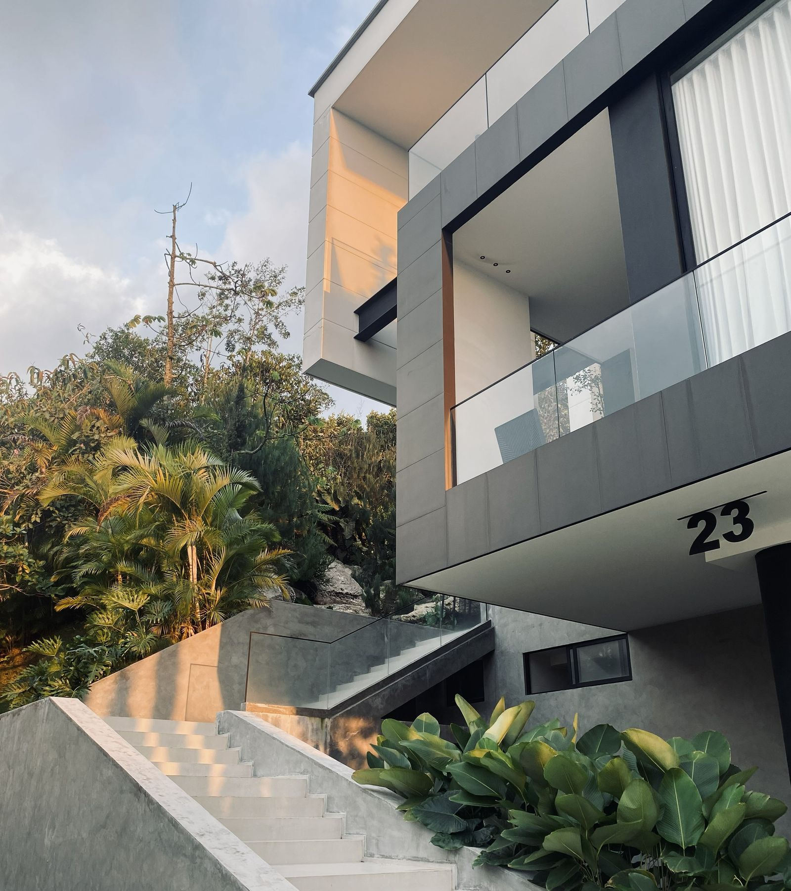

EditorialVol. I
Edición00 — Apertura
Año2026
OrigenBucaramanga, CO
— Un espacio independiente de exploración sobre arquitectura, arte y cultura visual.
Enough.
La luz baja. El ruido desaparece. Y el espacio vuelve a sentirse humano.
01
Manifiesto
Lectura
Lectura
— Una postura frente al diseño contemporáneo
No todo está
en la imagen.
Muchos espacios contemporáneos parecen tenerlo todo: superficies impecables, luces cuidadosamente dispuestas y materiales que llaman la atención. Sin embargo, a veces cuesta encontrar algo que invite a quedarse.
Enough nace de esa inquietud. De mirar los espacios más allá de su apariencia, de prestar atención a lo que sucede cuando la luz cambia, cuando los materiales revelan otras texturas o cuando los objetos empiezan a formar parte de la vida cotidiana.
Nos interesan las huellas del tiempo, las combinaciones inesperadas, los espacios que reflejan a quienes los habitan y los detalles que, aunque pequeños, terminan cambiando nuestra manera de percibir un lugar.
02
Espacios
Archivo visual
Archivo visual
Imágenes propias sobre luz, materia y atmósfera.
Selección — 2026
Bucaramanga · CO
Bucaramanga · CO
03
Estudios
de luz
de luz
Seis estudios sobre cómo la luz ocupa una habitación.
Láminas I — VI
Cuaderno N.º 04
Cuaderno N.º 04
— Fragmento · cuaderno
"Hay lugares que no necesitan imponerse para permanecer. Un muro atravesado por luz tenue. La densidad de una habitación en penumbra. El desgaste de una superficie que guarda tiempo."
Año2026
LugarBucaramanga
FragmentoIV
04
Acceso
Privado
Privado
Un punto de entrada para volver al archivo.
Hecho para lectores, colaboradores y usuarios que quieran seguir el rastro de Enough con una entrada clara, sobria y directa.
Acceso privado · Editorial
— Entrar al archivo
Ir al acceso
05
Contacto